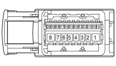

D020C DASHBOARD/REAR COUPLING (REAR)
- Path
- Electrical equipment > 3 CONNECTORS > D INTERMEDIATE COUPLINGS > D020 DASHBOARD/REAR COUPLING > D020C DASHBOARD/REAR COUPLING (REAR)
- Kind
- connector pinout (pin -> wire colour -> other end)
- Applies to
- engines: 2.0 16V JTD, 2.2 16V JTD; all production periods; only with equipment: MY 2005
- Interactive page
- https://sloeber94.github.io/elrnDB-fUlss/en/#/179009754
Applies to: engines: 2.0 16V JTD, 2.2 16V JTD; all production periods; only with equipment: MY 2005

Wiring | Colour |
|---|---|
GIALLO (yellow) |
Pin | Cable | Destination | |||
|---|---|---|---|---|---|
Sec.. | Colour | Node | Connect. | Pin | |
1 | 1,5 | 8410A | 2 | ||
1 | 1,5 | 8410B | 8 | ||
2 | 1,5 | 8410A | 1 | ||
3 | 1,5 | 8450A | 1 | ||
4 | 1,5 | 8451A | 2 | ||
6 | 0,5 | 8087A | 5 | ||
6 | 0,5 | 8087B | 5 | ||
7 | 1,5 | 8411A | 8 | ||
8 | 1,5 | 8411A | 7 | ||
8 | 1,5 | 8411B | 9 | ||
9 | 0,5 | 8488 | 14 | ||
10 | 0,5 | 8487 | 13 | ||
11 | 0,5 | 8086 | 6 | ||
12 | 0,5 | 8085 | 6 | ||
13 | 0,5 | 9000B | X | 3 | |
3 | |||||
18 | |||||
14 | 0,5 | 8454 | 1 | ||
15 | 0,5 | 8489 | 2 | ||
16 | 0,5 | 8497 | 3 | ||
17 | 0,5 | 9001D | X | 5 | |
2 | |||||
9 | |||||
19 | 0,5 | BECV | 7 | ||
Topics linked from this page (11)
- 25 REAR
- D006 FRONT/REAR COUPLING
- D020C DASHBOARD/REAR COUPLING (DASHBOARD)
- D030 DRIVER'S FRONT DOOR COUPLING
- D042B COURTESY LIGHT COUPLING (SUN ROOF BRIDGE)
- H125 LEFT REAR ADDITIONAL FAN CONTROL
- H126 RIGHT REAR ADDITIONAL FAN CONTROL
- M047 TYRE INFLATION PRESSURE CONTROL UNIT
- M091 SLEWING CONTROL UNIT
- P022 AERIAL AND HEATED REAR WINDOW CONTROL UNIT
- P120 LEAF REAR SPEAKER IN SIDE PANEL